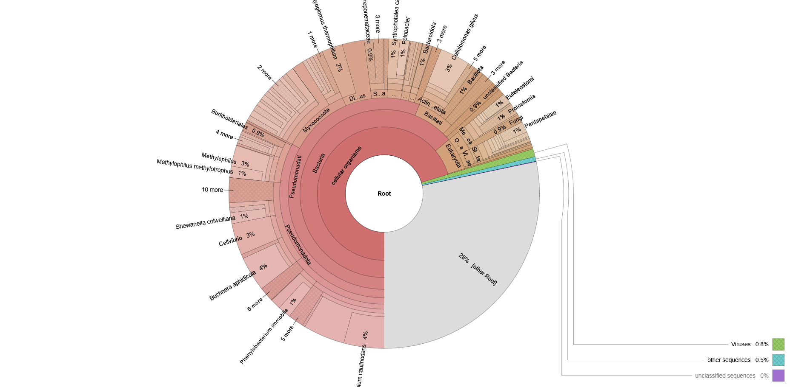
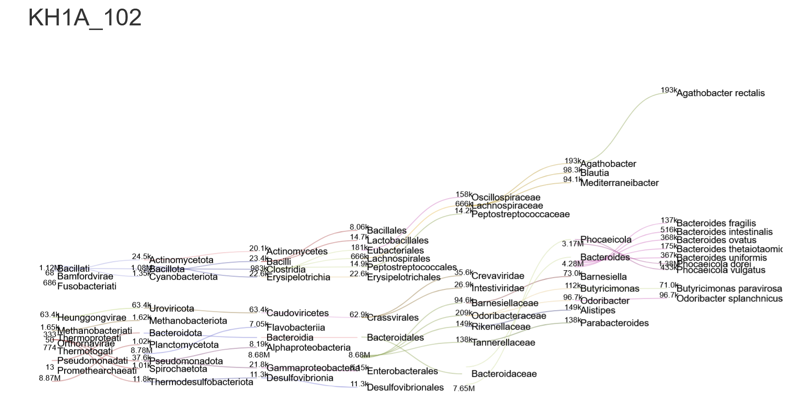
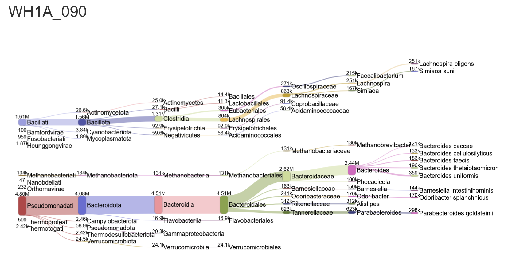

Taxonomic Profiling
We performed taxonomic assignment to determine the microbial composition of the gut samples using the Kraken2 and Bracken pipeline.
Methodology
- Kraken2: Assigned reads to the NCBI taxonomy database using k-mer alignment.
- Bracken: Re-estimated abundances at the species level to correct for Kraken's bias.
Kraken2 Classification
Reads were assigned to the NCBI taxonomy database using Kraken2. This tool utilizes a k-mer alignment strategy for fast and accurate classification.
# Example command for Sample WH1B_089
# This step was repeated for all 12 samples
kraken2 --db ~/kraken2_db --paired --report WH1B_089.kreport2 \
--output WH1B_089.kraken2_out \
../2-Trimmed/WH1B_089_R1_val_1.fq.gz ../2-Trimmed/WH1B_089_R2_val_2.fq.gz
Bracken Species Re-estimation
To correct for inherent biases in k-mer assignments and provide more accurate species-level quantification, we utilized Bracken.
# Example command for Bracken (Species level -l S)
bracken -d ~/kraken2_db/ -i WH1B_089.kreport2 -o WH1B_089.bracken \
-w WH1B_089.breport2 -r 100 -l S -t 5
Results
The gut microbiome was dominated by the Bacteroidetes and Firmicutes phyla. Interactive visualizations were generated to compare the relative abundance between Korean and Western diet groups.
Key Observation: The Korean diet group showed a higher abundance of specific fiber-degrading bacteria compared to the Western group.
Visualizations
- Krona Plots: Provide an interactive hierarchical view of the taxonomy.
Interactive Krona Plots
Krona was used to generate hierarchical visualizations of the gut microbiome. This allows for an intuitive exploration of the relative abundance from Phylum down to Species level
# Aggregating all Bracken reports into a single Krona HTML
ktImportTaxonomy -o microbiome_species.krona.html *.breport2

- Pavian Matrices: Used for cross-sample comparison and Z-score analysis.
Sankey Flow Diagrams
To compare the taxonomic structure between the dietary cohorts, we generated Sankey diagrams. The figures below display representative samples from each group, illustrating the flow of assignments from the Domain down to the Genus level.
Korean High Diet (Representative Sample: KH1A):

Observation: Notice the specific expansion in fiber-degrading taxonomic branches.Western High Diet (Representative Sample: WH1A):

Observation: Demonstrates a distinct structural shift associated with the Western diet profile.Further analysis of bracken results
To better visualise the inter-group compositional differences between korean and western individuals before and after diet, an analysis method was adapted from https://github.com/rotheconrad/Kraken-Bracken-plot. The python script produces a barchart of the proportion of the top 10 species identified in the bracken analysis and modifications were made to produce neat groupped plots. Results were groupped according to before or after diet for each ethnic group, with the following command:
python Kraken_Bracken_plot.py -i bracken_input.txt -p grouped_plot.pdf -o grouped_table.tsv
Barchart showing compositional difference